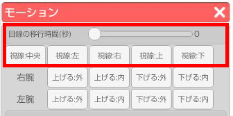
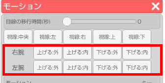
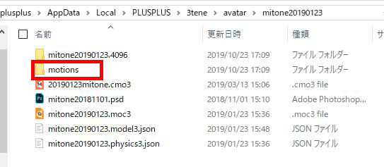
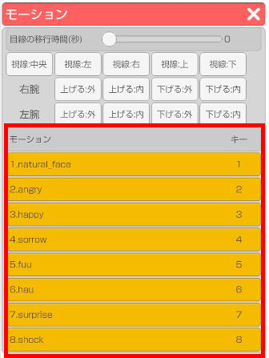
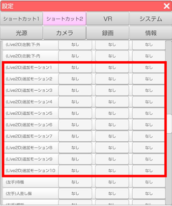

読み込んでいるアバターがLive2Dの場合、左側メニュー上から2番目の「モーション」アイコンを
クリックするとLive2D用モーションウインドウが開きます。
ウインドウ内のモーションリストのボタンをクリックするとアバターが動きます。
アバターに組み込まれているモーションで動かします。アバターによってはモーションが組み込まれていない場合もあります。
※VRM のようなデフォルト モーションは入っていません。
Live2D用モーションウインドウ上部の「目線の移動時間」でLive2Dモデルの目線の移動時間を設定します。
「視線：〇〇」ボタンで該当の方向に目線を移動させます。
※パラメータ「ParamEyeBallX」「ParamEyeBallY」が必要

Live2D用モーションウインドウ内の「右腕」「左腕」右側のボタンをクリックすることで該当の方向に腕を動かせます。
※3tene用パラメーター「ParamArmLX」「ParamArmLY」「ParamArmRX」「ParamArmRY」が必要

Live2Dモデル読み込み時に「motions」フォルダを作成し、その中に作成したモーションファイルを入れて3teneに読み込んでください。

3teneに読み込み後は、Live2D用モーションウインドウのリストに追加されます。
※画像はみとねのモーションデータ

ショートカットの設定は 設定 - ショートカット2 から行うことが出来ます。
※ショートカットキーは10個まで対応
